Past Updates21-27.06.2026: Instructor at the 39th European Consortium for Mathematics in Industry (ECMI) Modelling Week.{}{table}{TABLE_RESEARCH} 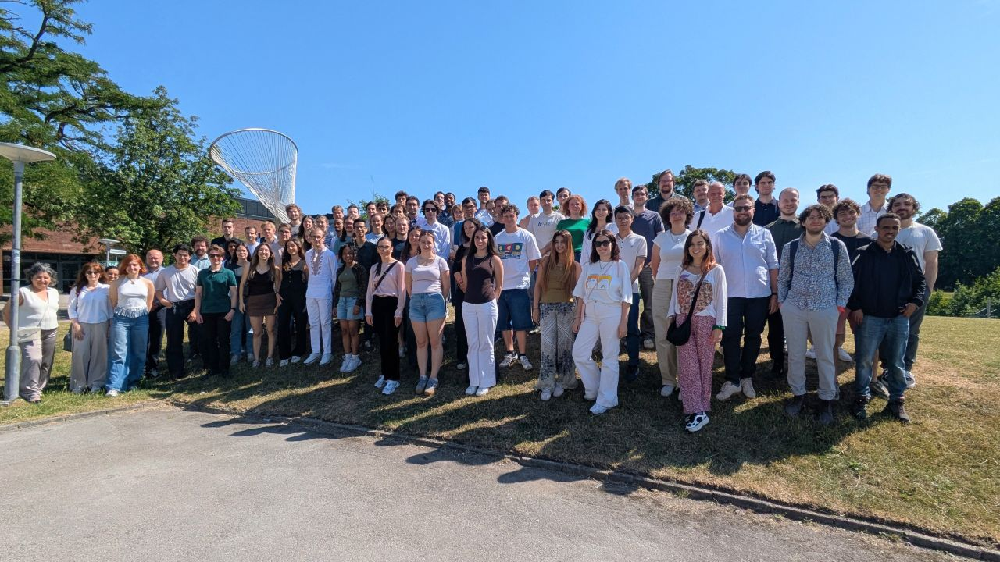 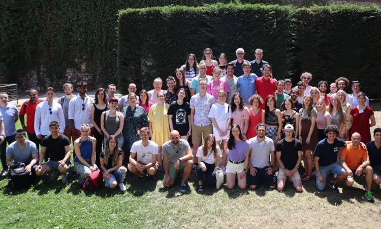 I am very happy to share that I am taking part one more time on the ECMI Modelling week, this time as an instructor. As a mathematics master student in Lund University I was given the opportunity to participate on the ECMI Modelling week in Verona, Italy, in 2022, where I met a lot of people from different european universities, at that time I joined the project “ Deep Learning for Modeling Filamentous Sludge Bulking”. This time I could join this great initiative from Lund and as an instructor with the project “Probabilistic Risk Assessment for Power Grids”. The students did an amazing job and it was great to connect again with so many people, both students and instructors at a multi national environment and where everyone was coming for diverse backgrounds! Website. Link to the Linkdn post. 23-28.08.2026: 23rd IFAC Word Congress in Busan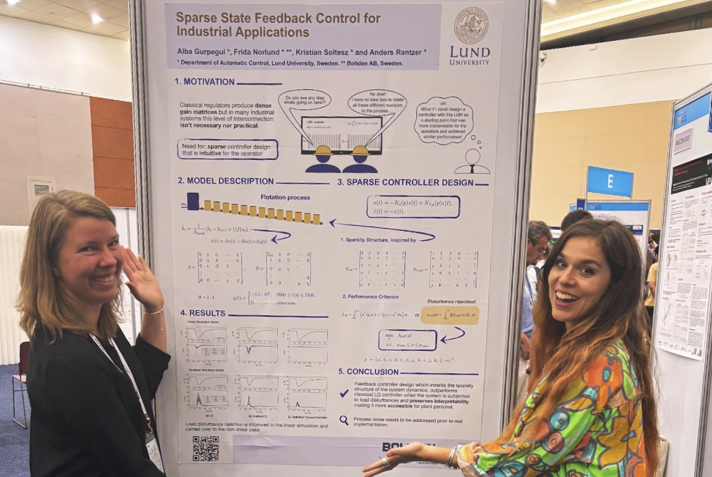 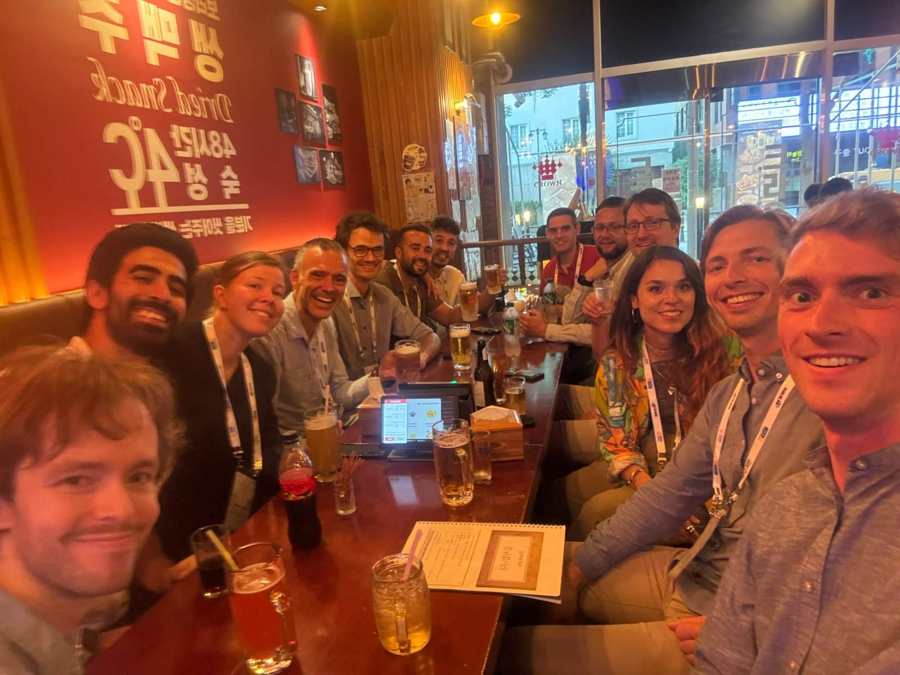 In August I attended the IFAC World Congress 2026. There, my great colleague and friend Frida Norlund gave a great short talk introducing the poster we presented later that day about our paper, “Sparse State Feedback Control for Industrial Applications” which can be found in arXiv. Thank you also to our supervisors and co-authors on this great project, Kristian Soltesz, and Anders Rantzer which has helped me expand my research in a new direction. It's been great sharing this journey together, and I'm so looking forward to the next adventures! 02.03.2026: Publication in IEEE TAC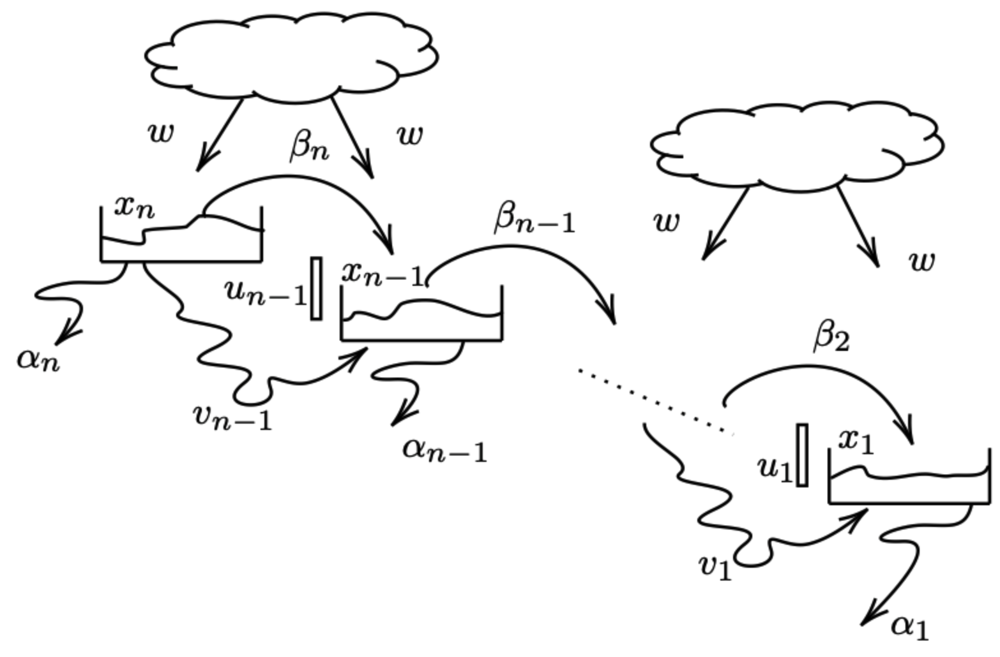 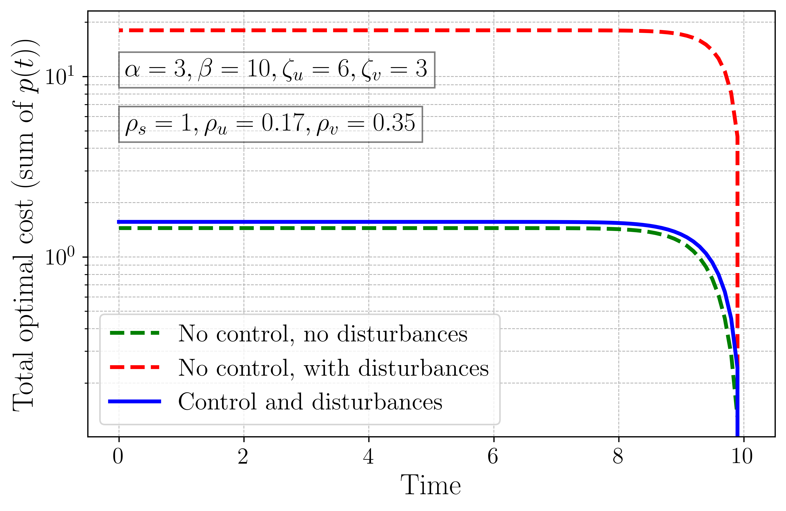 I am super happy to announce that our paper 'Minimax Linear Regulator Problems for Positive Systems’ has been recently accepted for publication as full paper in IEEE Transactions on Automatic control. This work presents a deterministic, multi-disturbance minimax Linear Regulator (LR) framework for positive linear time-invariant systems in continuous time. Similar to the Linear-Quadratic Regulator (LQR), this framework can be applied to the stabilization of positive systems. We show that this problem class admits explicit solutions in both finite and infinite horizon settings, resulting in vector-valued ODEs and algebraic equations, respectively. These characterize optimal control policies that take the form of a time-varying state feedback law in the finite horizon case and a static feedback law in the infinite horizon case. Unlike LQR, the number of unknowns in the explicit solution grows only linearly with the state dimension. Furthermore, the sparsity structure of the optimal control policy is inherited from a matrix in the problem constraints, allowing the problem designer to determine the sparsity of the resulting optimal control laws a priori. The full manuscript can be found published in IEEE TAC and in arXiv. 03.2026-04.2026: International Seminars in the US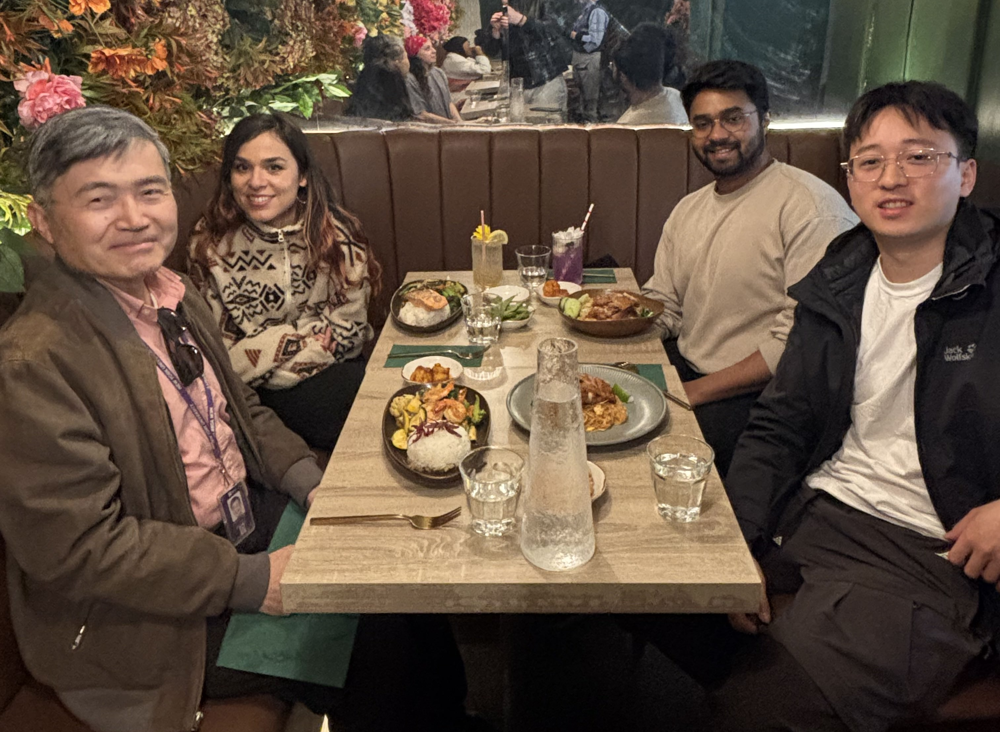 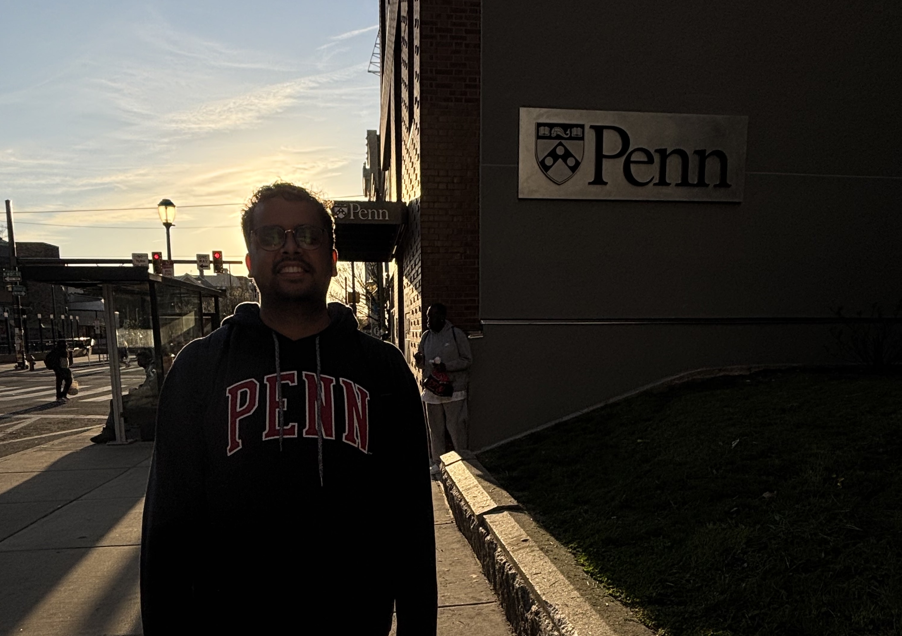 08-10.04.2026: Seminars at PennSribalaji C. Anand suggested I visit Penn during my stay in the US. Thank you so much, Sri, for showing me around Philly, for the insightful discussions (of all kinds), and for your generous hospitality. I am also deeply grateful to Professors Nikolai Matni, Rahul Mangharam and George Pappas, who hosted me on Wednesday, Thursday, and Friday respectively, giving me the opportunity to present seminars to each of their research groups. It was a wonderful three days filled with stimulating discussions, and I'm truly thankful to all the lab members for the engaging conversations and warm welcome. 07.04.2026: CAN-Lab Seminar at NYUPrior to my visit to Penn I had the opportunity to present my research at the Tandon School of Engineering at New York University, hosted by Professor Zhong-Ping Jiang. I am very grateful to Professor Jiang and all lab members for the great discussions! 25.03.2026: Decision & Control Special Seminar at UIUCDuring my stay in the US I was invited by Professor Carolyn Beck to visit the University of Illinois Urbana Champaign for a week and present my work at the Coordinated Science Lab. Thank you Carolyn! 12.01.2026-17.04.2026: Visiting Scholar at Purdue University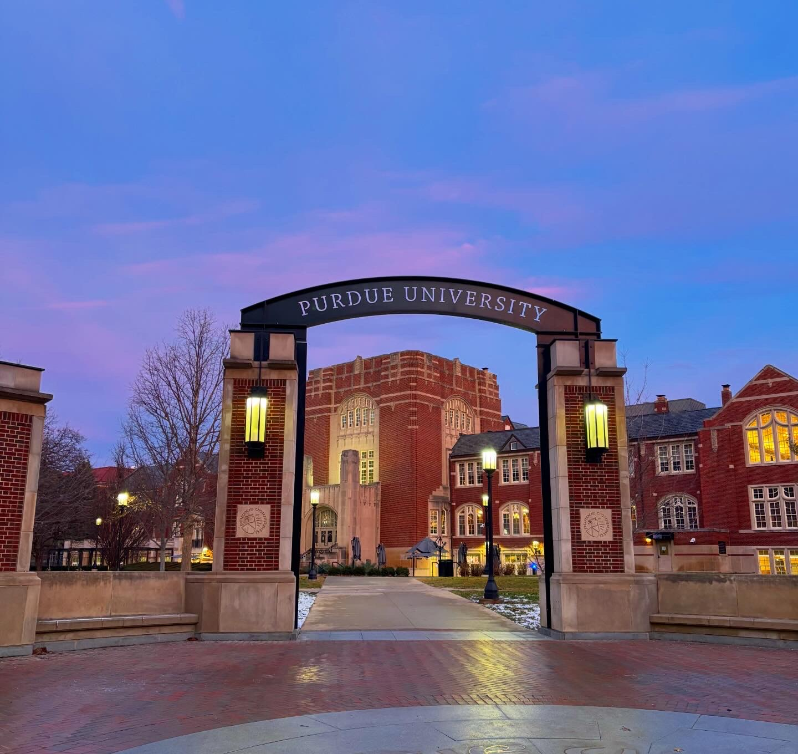 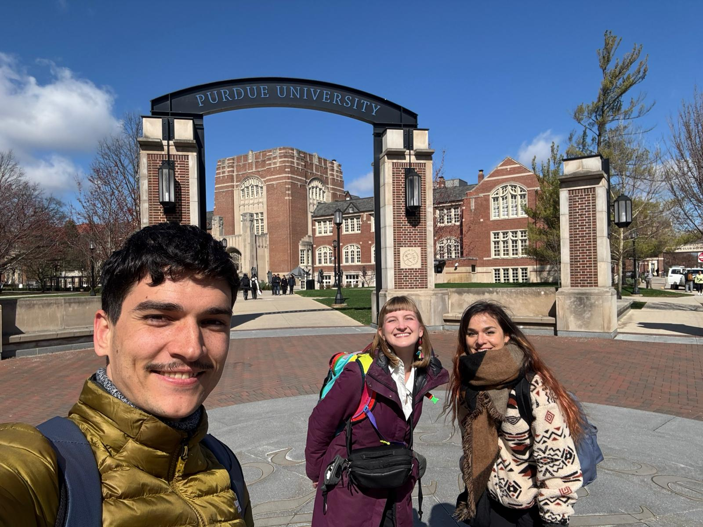 I visited Professor Takashi Tanaka's lab at the School of Aeronautics and Astronautics. During this research visit I have been involved in two main projects that extend my work on L1 optimal control for positive systems to the stochastic and general-sum settings. In particular, this works demonstrate that the Linear Regulator framework is robust to multiplicative stochastic uncertainty and characterize the feedback and stationary Nash equilibria for a general-sum formulation. During my time here I am also joining the group meetings of professor Philip Paré who encouraged me to participate in the ICON Student Research Conference. 30.01.2026 Excellence in Research Award at the ICON Student Research Conference 2026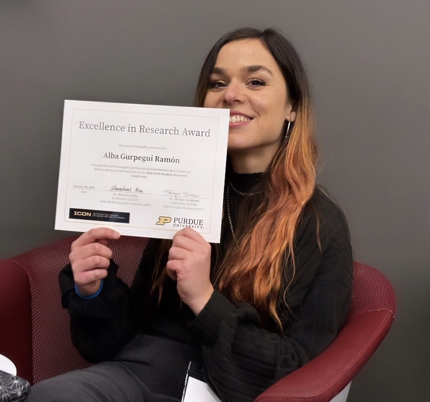 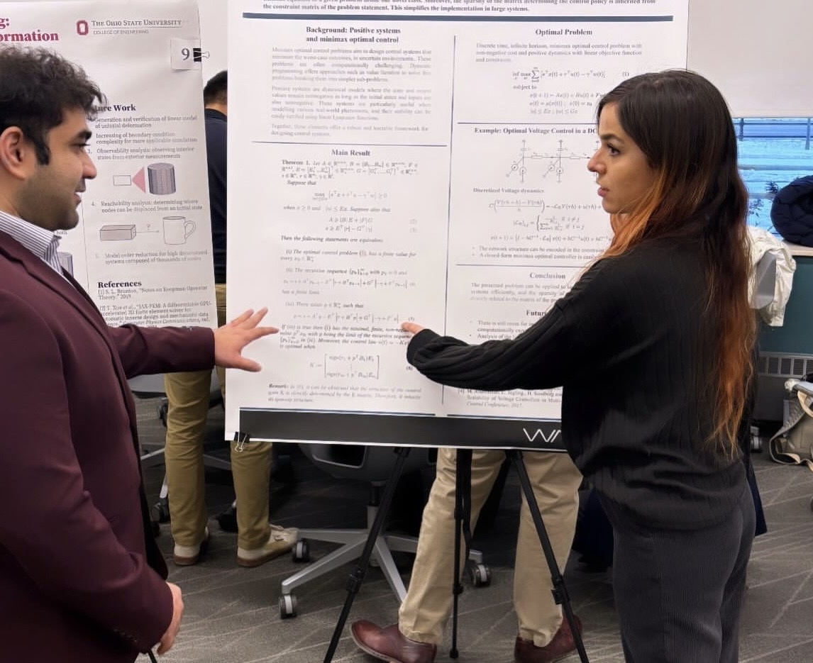 On the 29th and 30th of January, I attended the ICON Student Research Conference, where I had the opportunity to present my work on minimax optimal control for positive systems in discrete time, both in a control session and in one of the poster sessions. I would like to highlight the keynote by Dr. Anuradha Annaswamy, which preceded the session where I presented. It was truly inspiring. Apart from being a great experience where I engaged in many wonderful conversations, I was awarded the Excellence in Research Prize, which felt incredibly rewarding. Thanks again! 02-05.06.2025 IFAC young author award finalist, NecSys 2025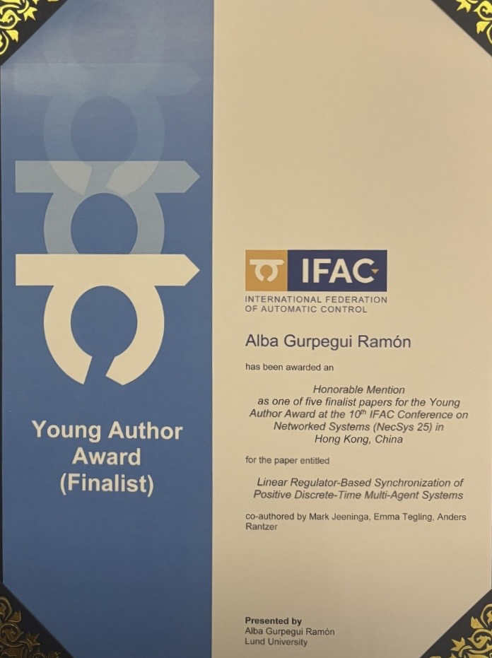 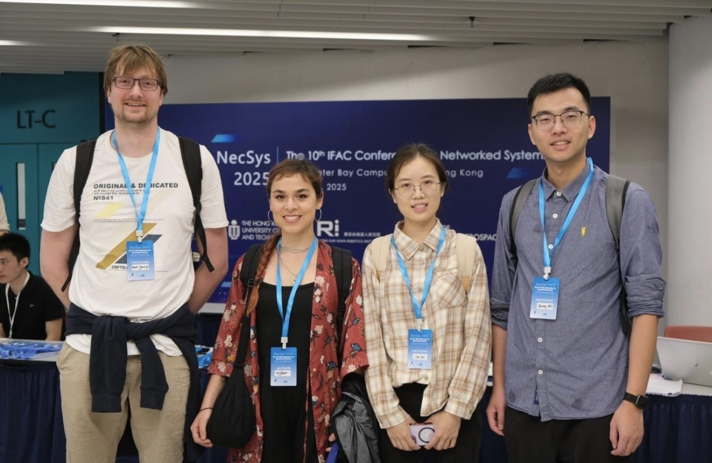 On the 2nd of June, I arrived in Hong Kong to attend the 10th IFAC Conference on Networked Systems. Because I was nominated for the Best Young Author Award, I presented my research in an oral presentation. We were two finalists, and even though I did not win first place, I received a lot of interest and positive feedback that made me feel as if I had won. Congratulations to all the presenters. Speaking of winning, something I can definitely highlight from this conference was the social interaction with the different professors and Ph.D. students. In particular, thank you Shiyong Zhu and Lin Lin for taking us around and showing us what life in Hong Kong looks like. Also, big thanks to Prof. James Lam and Prof. Jie Chen for inviting me to give a talk at their research groups. I would also like to extend my gratitude to the Royal Physiographic Society of Lund, who granted me the Young Researchers Ph.D. Students Grant, with which I could finance this amazing trip! 28.02.2025 I defended my Licenciate Thesis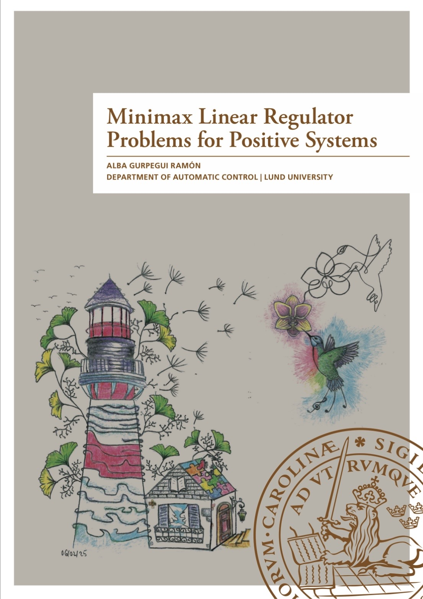 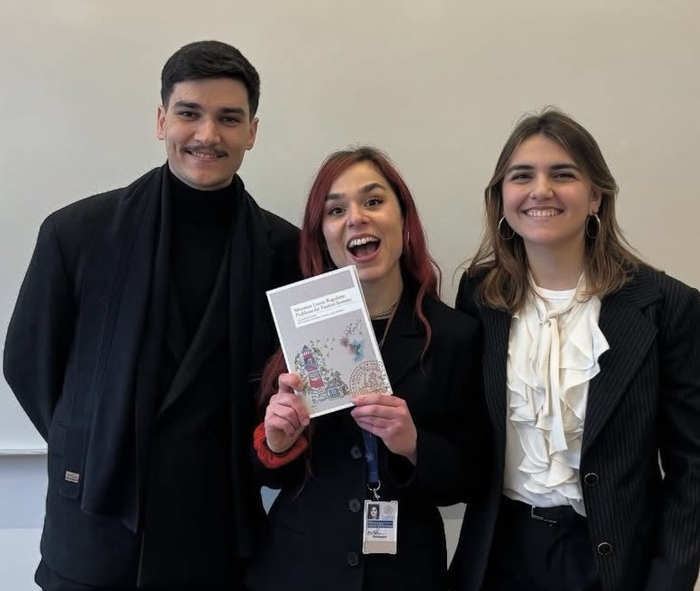 After months of work, I finally defended my Licentiate Thesis. Thanks to my opponent Claudio Altafini for his insightful comments, to Anders Rantzer and Emma Tegling for their supervision and patience, and to my colleagues and friends for supporting me along the way. Now I can say I feel less scared about facing my Ph.D. defence, and I am optimistic I will be able to enjoy it. The thesis can already be found in Lund University publications. I would also like to thank my parents, without whom I would not have had the opportunity to study what I wanted and to do so abroad, and my brother and childhood friend who came to my defence. In this thesis, I consolidate the optimal control framework I have been
investigating since I started my Ph.D. and its applications to network synchronization.
I am excited about my future work towards optimal and robust observation and output
feedback, which has already proved to be extra challenging.
|